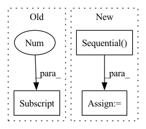

Pattern ID :32287
Before Change
self.q1_net = nn.Sequential(
nn.Linear(state_dim + action_dim, net_arch[0]),
activation_fn(),
nn.Linear(net_arch[0], net_arch[1] ),
activation_fn(),
nn.Linear(net_arch[1], 1),
)After Change
self.q1_net = nn.Sequential(*q1_net)
q2_net = create_mlp(state_dim + action_dim, 1, net_arch, activation_fn)
self.q2_net = nn.Sequential( *q2_net)
self.q_networks = [self.q1_net, self.q2_net]
def forward(self, obs, action):
qvalue_input = th.cat([obs, action], dim=1)In pattern: SUPERPATTERN
Frequency: 8
Non-data size: 3
Instances Fragment ID: 94445601
Project Name: dlr-rm/stable-baselines3
Commit Name: 5e3a84d5511ea121e01b2fa377e1c1e3219f34b3
Time: 2019-09-12
Author: antonin.raffin@dlr.de
File Name: torchy_baselines/td3/policies.py
M Class Name: Critic
N Class Name: Critic
M Method Name: __init__(5)
N Method Name: __init__(5)
M Parent Class: BaseNetwork
N Parent Class: BaseNetwork
M File Name: torchy_baselines/td3/policies.py
N File Name: torchy_baselines/td3/policies.py
M Start Line: 58
M End Line: 74
N Start Line: 66
N End Line: 80
Before Change
self.actor_net = nn.Sequential(
nn.Linear(state_dim, net_arch[0]),
activation_fn(),
nn.Linear(net_arch[0] , net_arch[1]),
activation_fn(),
nn.Linear(net_arch[1], action_dim),
nn.Tanh(),After Change
// TODO: orthogonal initialization?
actor_net = create_mlp(state_dim, action_dim, net_arch, activation_fn, squash_out=True)
self.actor_net = nn.Sequential( *actor_net)
def forward(self, x):
return self.actor_net(x)
Fragment ID: 94445569
Project Name: dlr-rm/stable-baselines3
Commit Name: 5e3a84d5511ea121e01b2fa377e1c1e3219f34b3
Time: 2019-09-12
Author: antonin.raffin@dlr.de
File Name: torchy_baselines/td3/policies.py
M Class Name: Actor
N Class Name: Actor
M Method Name: __init__(5)
N Method Name: __init__(5)
M Parent Class: BaseNetwork
N Parent Class: BaseNetwork
M File Name: torchy_baselines/td3/policies.py
N File Name: torchy_baselines/td3/policies.py
M Start Line: 36
M End Line: 47
N Start Line: 50
N End Line: 54
Before Change
img, text, label = data
img = img.to(device)
label = label.to(device)
img_embedding = resnet50(img).topk(64)[0]
text_embedding = torch.stack([get_encoding(t, bert, device) for t in text]).to(device)
pred, img_f, text_f = model(img_embedding, text_embedding)
After Change
valloader = torch.utils.data.DataLoader(valset, shuffle = False, batch_size = 1)
resnet50 = models.resnet50(pretrained = True).to(device)
resnet50 = torch.nn.Sequential( *(list(resnet50.children())[:-1])) .to(device).eval()
bert = BertModel.from_pretrained("bert-base-uncased").to(device).eval()
model = Towers().to(device).eval() Fragment ID: 94445585
Project Name: amanjain1397/huse
Commit Name: 5937721f1f9b59fcfb5f1ce0e3a34797a83e9302
Time: 2020-06-11
Author: amanjain1397@gmail.com
File Name: main.py
M Class Name: AnonimousClass
N Class Name: AnonimousClass
M Method Name: evaluate(1)
N Method Name: evaluate(1)
M Parent Class:
N Parent Class:
M File Name: main.py
N File Name: main.py
M Start Line: 151
M End Line: 180
N Start Line: 159
N End Line: 190
Before Change
// list(model._model.features[layer][kt].children())[1] = new_bn
// print(layer, kt, list(model._model.features[layer][kt].children())[1].num_features, new_bn.num_features, list(model._model.features[layer][kt].children())[0].out_channels)
list(model._model.features[layer][kt].children())[1] .num_features = list(model._model.features[layer][kt].children())[0].out_channels
After Change
if layer > 3 and layer < 7 and kt == 0:
new_bn = torch.nn.BatchNorm2d(list(model._model.features[layer][kt].children())[5][0].out_channels, eps=1e-05, momentum=0.1, affine=True)
ds = torch.nn.Sequential( *(self.replace_layers(list(model._model.features[layer][kt].children())[5], i, [1], [new_bn]) for i, _ in enumerate(list(model._model.features[layer][kt].children())[5])))
setattr(self.model._model.features[layer][kt], "downsample", ds)
return model
Fragment ID: 94445584
Project Name: ain-soph/trojanzoo
Commit Name: aaffa68f32dfd4c8743893f434a72d98c3d8bab8
Time: 2020-07-07
Author: corazju@zju.edu.cn
File Name: trojanzoo/defense/backdoor/fine_pruning.py
M Class Name: Fine_Pruning
N Class Name: Fine_Pruning
M Method Name: batchnorm_modify(2)
N Method Name: batchnorm_modify(2)
M Parent Class:
N Parent Class:
M File Name: trojanzoo/defense/backdoor/fine_pruning.py
N File Name: trojanzoo/defense/backdoor/fine_pruning.py
M Start Line: 234
M End Line: 256
N Start Line: 264
N End Line: 283
Before Change
imgs = imgs.to(device)
labels = labels.to(device)
img_embeddings = resnet50(imgs).topk(64)[0]
text_embeddings = torch.stack([get_encoding(text, bert, device) for text in texts]).to(device)
opt.zero_grad()
outputs, imgs_f, texts_f = model(img_embeddings, text_embeddings)After Change
trainloader = torch.utils.data.DataLoader(trainset, shuffle = True, batch_size = args.batch_size, drop_last= True)
resnet50 = models.resnet50(pretrained = True).to(device)
resnet50 = torch.nn.Sequential( *(list(resnet50.children())[:-1])) .to(device)
bert = BertModel.from_pretrained("bert-base-uncased").to(device)
for param in resnet50.parameters(): Fragment ID: 94445589
Project Name: amanjain1397/huse
Commit Name: 5937721f1f9b59fcfb5f1ce0e3a34797a83e9302
Time: 2020-06-11
Author: amanjain1397@gmail.com
File Name: main.py
M Class Name: AnonimousClass
N Class Name: AnonimousClass
M Method Name: train(1)
N Method Name: train(1)
M Parent Class:
N Parent Class:
M File Name: main.py
N File Name: main.py
M Start Line: 76
M End Line: 109
N Start Line: 76
N End Line: 117
Before Change
{"in_dim": 64*7*7},
]
dense_arch[0]["in_dim"] = dense_in_dim
dense_arch[-1] ["out_dim"] = representation_dim
// apply the dense layers
for ind, layer_spec in enumerate(dense_arch[:-1]):After Change
kernel_size=layer_spec["kernel_size"], stride=layer_spec["stride"]))
deconv_layers.append(nn.ReLU())
self.input_channel = layer_spec["out_dim"]
self.deconvolution = nn.Sequential( *deconv_layers)
dense_layers = []
dense_layers.append(nn.Flatten())
// now customise the dense layers to handle an appropriate-sized conv output Fragment ID: 94445567
Project Name: humancompatibleai/eirli
Commit Name: 47b746c31dea0d8172f0f44bbdcb38284e85a453
Time: 2020-09-08
Author: codywild@berkeley.edu
File Name: src/il_representations/algos/encoders.py
M Class Name: BasicCNN
N Class Name: BasicCNN
M Method Name: __init__(3)
N Method Name: __init__(3)
M Parent Class: nn.Module
N Parent Class: nn.Module
M File Name: src/il_representations/algos/encoders.py
N File Name: src/il_representations/algos/encoders.py
M Start Line: 115
M End Line: 133
N Start Line: 130
N End Line: 147
Before Change
// this input size is accurate for Atari, but will be ovewritten for other envs
{"in_dim": 64*7*7},
]
dense_arch[0] ["in_dim"] = dense_in_dim
dense_arch[-1]["out_dim"] = representation_dim
// apply the dense layersAfter Change
kernel_size=layer_spec["kernel_size"], stride=layer_spec["stride"]))
deconv_layers.append(nn.ReLU())
self.input_channel = layer_spec["out_dim"]
self.deconvolution = nn.Sequential( *deconv_layers)
dense_layers = []
dense_layers.append(nn.Flatten())
// now customise the dense layers to handle an appropriate-sized conv output Fragment ID: 94445566
Project Name: humancompatibleai/eirli
Commit Name: 386f0622be7b83f45c94d8ca7ef8c9d5b59f4d11
Time: 2020-09-08
Author: codywild@berkeley.edu
File Name: src/il_representations/algos/encoders.py
M Class Name: BasicCNN
N Class Name: BasicCNN
M Method Name: __init__(3)
N Method Name: __init__(3)
M Parent Class: nn.Module
N Parent Class: nn.Module
M File Name: src/il_representations/algos/encoders.py
N File Name: src/il_representations/algos/encoders.py
M Start Line: 115
M End Line: 133
N Start Line: 130
N End Line: 147
Before Change
nn.ReLU(),
nn.Dropout(0.5)
)
bottleneck[2] .weight.data.normal_(0, 0.005)
bottleneck[2].bias.data.fill_(0.1)
// The classifier head used for final predictions.After Change
auto_step=False) if grl is None else grl
if pool_layer is None:
pool_layer = nn.Sequential(
nn.AdaptiveAvgPool2d(output_size=(1, 1)),
nn.Flatten()
)
bottleneck = nn.Sequential(
pool_layer,
nn.Linear(backbone.out_features, bottleneck_dim),
nn.BatchNorm1d(bottleneck_dim), Fragment ID: 94445582
Project Name: thuml/transfer-learning-library
Commit Name: f7950ee17554dc6b3e19c13851106cda21041bca
Time: 2021-07-26
Author: 13126830206@163.com
File Name: dalib/adaptation/mdd.py
M Class Name: ImageClassifier
N Class Name: ImageClassifier
M Method Name: __init__(8)
N Method Name: __init__(7)
M Parent Class: GeneralModule
N Parent Class: GeneralModule
M File Name: dalib/adaptation/mdd.py
N File Name: dalib/adaptation/mdd.py
M Start Line: 320
M End Line: 328
N Start Line: 316
N End Line: 333